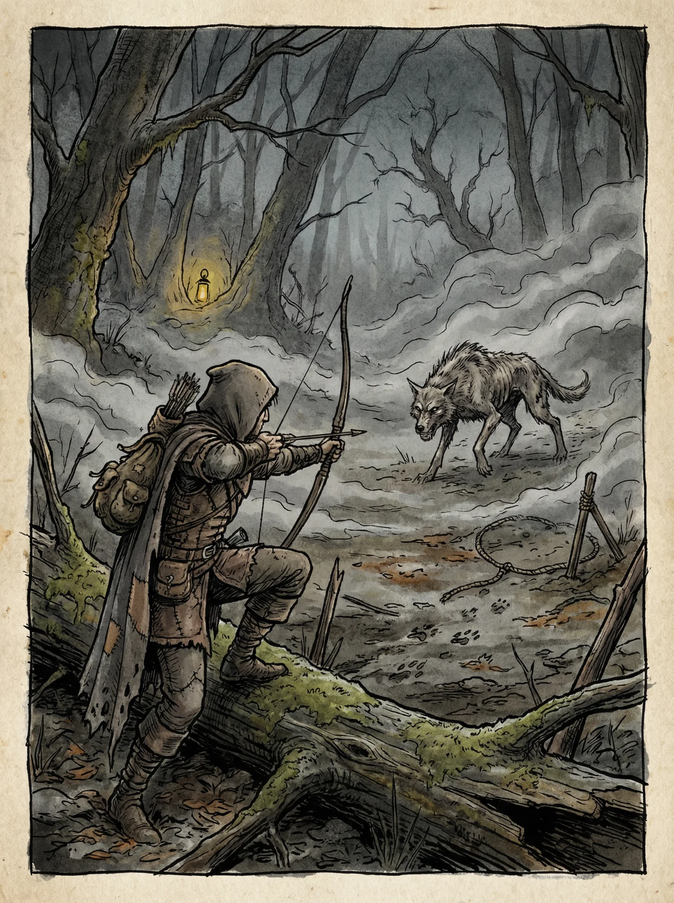
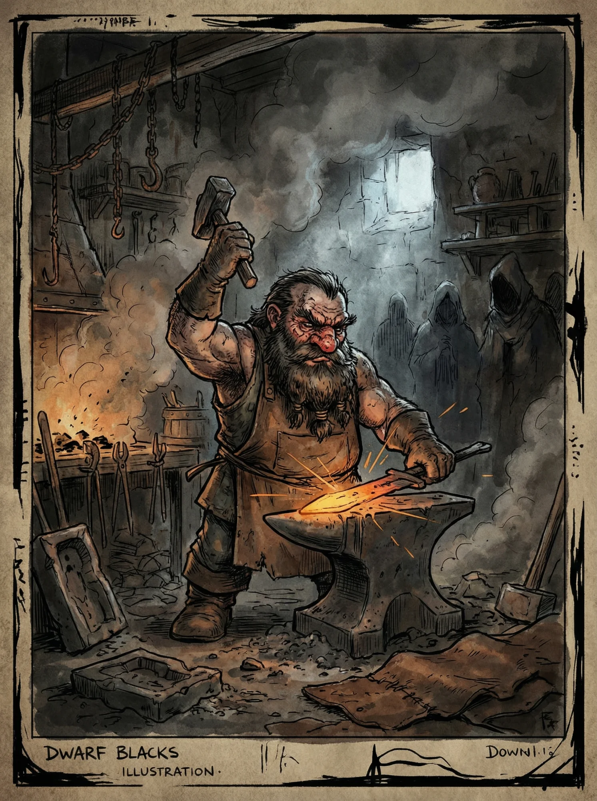
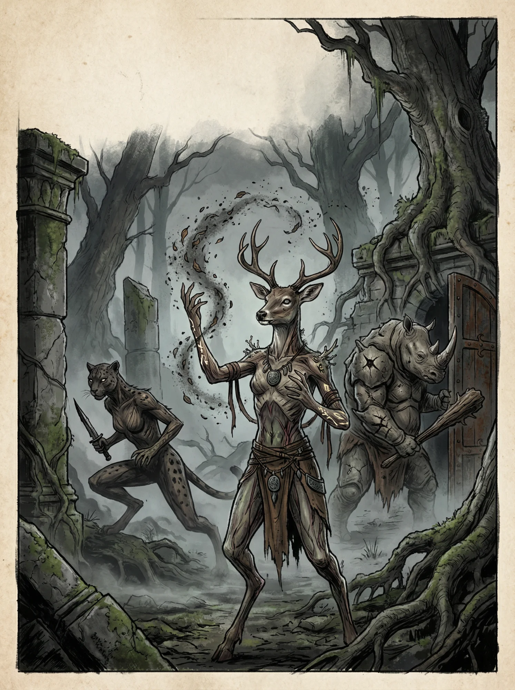
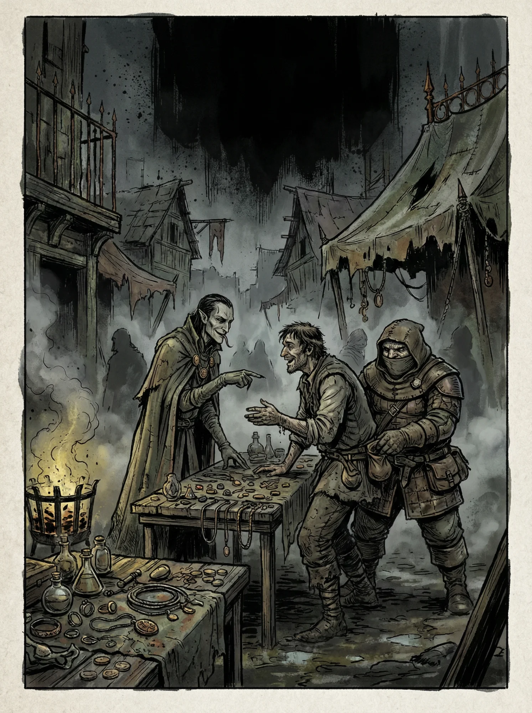
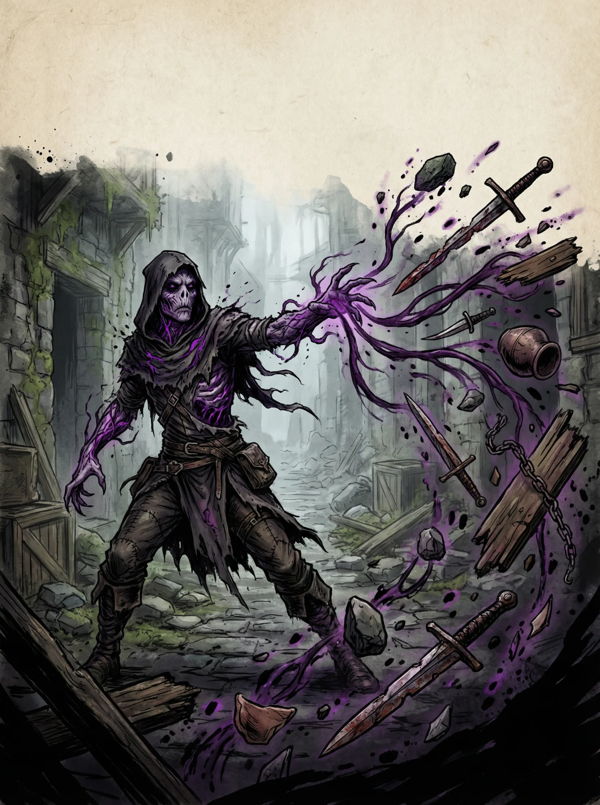
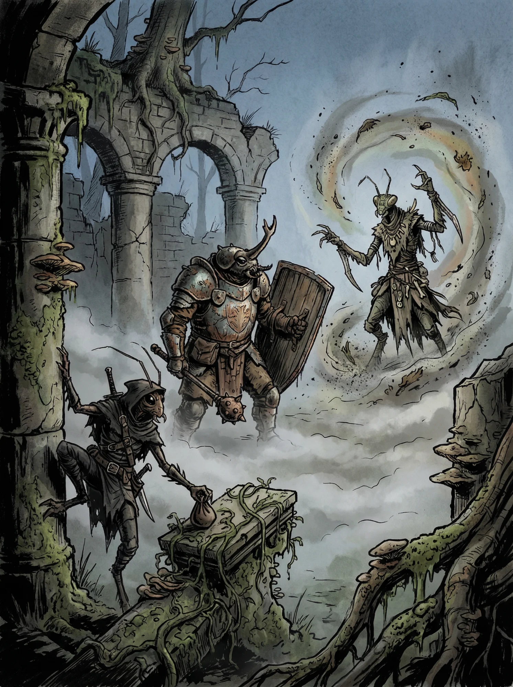

👤 Raças◆ ◆ ◆
Escolha sua ancestralidade. Cada raça oferece atributos, perícias e características únicas que moldam a natureza fundamental do seu personagem.

Humano
Adaptáveis, numerosos e determinados.
+1 em dois atributos
9m mov.
Estilos: Simples, Estudioso, Rebelde, Popular

Anão
Robustos e inflexíveis como a rocha.
+2 Con
-1 Des
7,5m mov.
Clãs: Krichama, Caxon

Dryad
Árvore e carne entrelaçadas.
+2 Des/Con
-1 Sab
10,5m mov.
Subespécies: Florescura, Cascaferro

Gruto
Humanoides reptilianos ancestrais.
+2 For/Con
-1 Int
9m mov.
Linhagens: Rokhan, Skal'ri

Corrompido
Marcados pelas forças primordiais.
+2 Int/Sab
-1 Con
9m mov.
Graus: Tocado, Alterado, Consumido

Autômato
Seres antigos de tecnologia esquecida.
+2 Int
-1 Sab
9m mov.
Sistema: Tecnologias Tier 1-5

Inseto
Insetos humanoides inteligentes.
Varia por subespécie
Subespécies: Besouro, Louva-a-Deus, Barata